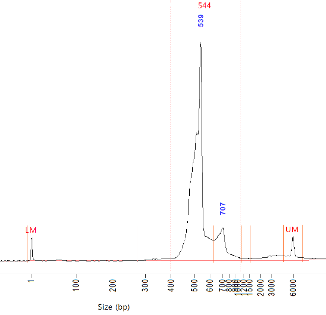
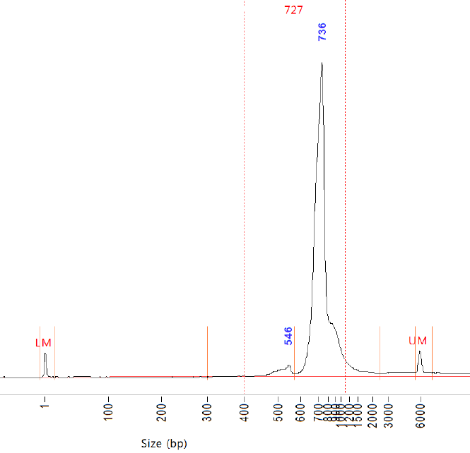

Welcome
Welcome to the Universal amplicon pipeline tutorial and setup workflow. This workflow helps you go from demultiplexed amplicon FASTQ files to a ready-to-run Snakemake configuration package.
The pipeline was designed around the 515F/926R universal primer pair, but it can be used with other amplicon primers provided the primer section is filled out correctly. It supports 16S and 18S reads, internal standards, and the metadata needed to generate the final files.
Use the sections below in order, then download the generated setup package when you are finished.
Why use a universal SSU rRNA primer set?
Metabarcoding using SSU rRNA as a marker gene is a powerful technique for profiling biological communities. Metabarcoding studies can be separated roughly into three groups:
- Studies of the “microbiome”—Bacteria and Archaea.
- Studies of microbial Eukarya, including phytoplankton and heterotrophic protists.
- Studies of macroscopic Eukarya, such as animals and plants.
The first group tends to use 16S SSU rRNA as a marker gene, while the second and third groups use 18S. PCR primer design has followed this division, with many primer sets targeting one group while discriminating against another.
However, 16S and 18S are, in evolutionary terms, the same molecule. SSU rRNA primers can therefore target both 16S and 18S in a single PCR assay. This is not two primer sets: one forward and one reverse primer amplify 16S from Archaea, Bacteria, chloroplasts, and mitochondria alongside eukaryotic nuclear 18S in the same tube.
That this is possible is remarkable. It shows that regions of the SSU rRNA molecule have remained sufficiently conserved across approximately 3.5 billion years of evolutionary history to amplify organisms as different as bacteria, chloroplasts, protists, and jellyfish.
Two example sequence pools
The first dataset comes from DNA extracted from 1 L of whole Pacific Ocean seawater filtered on a 0.2 µm Sterivex filter. It contains material ranging from prokaryotes and microbial eukaryotes to fragments, larvae, or propagules from animals.

The second dataset comes from the same region of the Pacific Ocean, but larger organisms were concentrated with a net tow. Most of the DNA therefore comes from animals, protists, and other microeukaryotes.

Why this pipeline is needed
One reason this approach has not been used more commonly is the mismatch between sequencing read lengths and amplicon lengths. The primers this pipeline was designed for bind at SSU rRNA coordinates 515 and 926 using E. coli as a reference. The resulting bacterial amplicon is approximately 411 bp, although its exact length varies among organisms. Archaeal amplicons are approximately the same length.
In Eukarya, the corresponding primer coordinates are 562 and 1150 in S. cerevisiae, producing an amplicon of approximately 588 bp. Although 18S length varies across evolutionary and ecological groups, eukaryotic amplicons are about 177 bp longer than prokaryotic amplicons on average.
Modern Illumina sequencing has a maximum paired-end read length of 300 bp, and low-quality bases—especially in the reverse read—must often be trimmed. The remaining forward and reverse reads usually overlap for 16S, but not for 18S. Most conventional amplicon pipelines require that overlap and consequently discard 18S reads from 515Y/926R data.
Based on an initial prototype by Mike Lee, Jesse McNichol refined a method for separating 16S and 18S reads in silico, and the pipeline grew from there. Yi-Chun Yeh, Melody Aleman, and Colette Fletcher-Hoppe have since made important contributions, many inspired by Jed Fuhrman’s ideas.
Repository and software setup
First choose a folder name for this analysis, then clone the pipeline into that folder. Use a new name for each run so its configuration, logs, and results stay together. You will also need Git, Conda, and Snakemake.
Install the requirements
Install Git and Conda before continuing. The official Snakemake installation guide recommends a Conda-based installation. Administrator access is not normally required when Conda is installed in your user directory.
conda create --name snakemake --channel conda-forge --channel bioconda snakemake conda activate snakemake snakemake --version
git clone --branch codex/config-tutorial-integration git@github.com:Nwilliams96/515FY-926R-snakemake-NW-edits.git AMT29-analysis cd AMT29-analysis
conda activate snakemake snakemake --version || echo "Snakemake is not installed"
Config.yml
Fill these fields to generate the config/config.yml file used by the Snakemake workflow.
<name>_ng sample columns and are printed in the recovery-plot legend and correction-method labels.Sample File
Enter the number of samples to create the table, then type directly or paste a block of cells copied from Excel, Google Sheets, or equivalent software.
| sample | replicate | condition | Depth (m) | Latitude and Longitude | Longitude [degrees_east] | Latitude [degrees_north] | time | ISD_1_ng | ISD_2_ng | ISD_3_ng | internal_std_normalization_factor | units |
|---|
The uploaded CSV fills this table; the final configuration download still contains the required config/samples.tsv.
Amplicon Concentrations
The 515F/926R primer pair targets both 16S and nuclear 18S rRNA. Unfortunately, there is a bias against 18S sequences when 16S and 18S sequences are mixed. This is because the 16S and 18S amplicons have different lengths (see the figures in the preamble) and are therefore sequenced at different rates, with a bias toward the shorter amplicons.
To correct for this, fill out this section of the configuration with the amounts of 16S and 18S molecules in the starting pool. These values can be obtained by running the pool on a TapeStation or Bioanalyzer, which most sequencing cores perform as part of quality control. The pipeline treats these values as the starting ratio, then calculates the ratio observed on the sequencing platform from the final 16S and 18S read counts. It uses the difference to increase the estimated 18S abundance and decrease the estimated 16S abundance accordingly.
Internal Standards
The current correction workflow uses exactly three internal standards. Their IDs come from Step 2; enter the copy number, genome length, and complete 16S sequence for each one.
Export
Once everything is filled in, export the package you can upload into the Snakemake directory.
config/
README.md
config.yml
samples.tsv
bioanalyzer.tsv
internal_stds.tsv # included when internal standards are enabled
schemas/
config.schema.yml
samples.schema.yml
setup-scripts/
setup-analysis-dir.sh
Your package will contain one complete config/ folder, including the README, schemas, and setup script.
username@hostname:/full/path/. You can also enter a local directory.scp ~/Downloads/universal-amplicon-config.zip <OUTPUT_DESTINATION>
If you prefer a graphical file-transfer program, upload the ZIP to the same project directory using Cyberduck or FileZilla. Connect with SFTP using the hostname and login details supplied by your institution or server administrator.
config/ directory.unzip universal-amplicon-config.zip
Results-Export/ folder. It contains the formatted data tables and this self-contained HTML report for a quick review of parameters, read quality and losses, composition, taxa, and internal-standard figures.Results-Export/AMT29.pipeline-report.html
Run the pipeline
From the main project folder, activate the Snakemake environment and run the included bash script:
conda activate snakemake bash run_snakemake.sh
The included script is intentionally minimal. Depending on your HPC system, you may need to add the appropriate executor and resource allocation settings, such as jobs, CPUs, memory, runtime, account, or partition.
Explore your ASV in GRUMP
If you used this pipeline with the same 515FY–926R primers and the same forward and reverse trim lengths used for GRUMP, you can copy an ASV hash from your results and search for it in the GRUMP Explorer. The explorer will show the ASV’s distribution across GRUMP samples.
Search an ASV hash in GRUMP